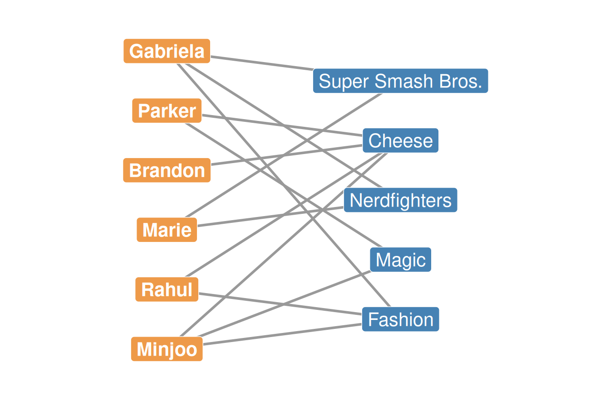
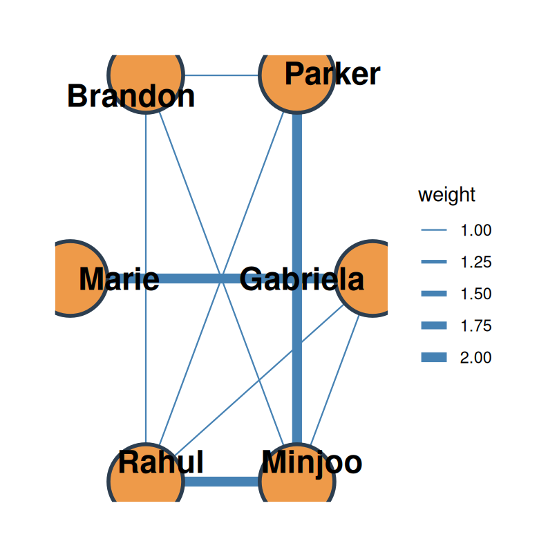
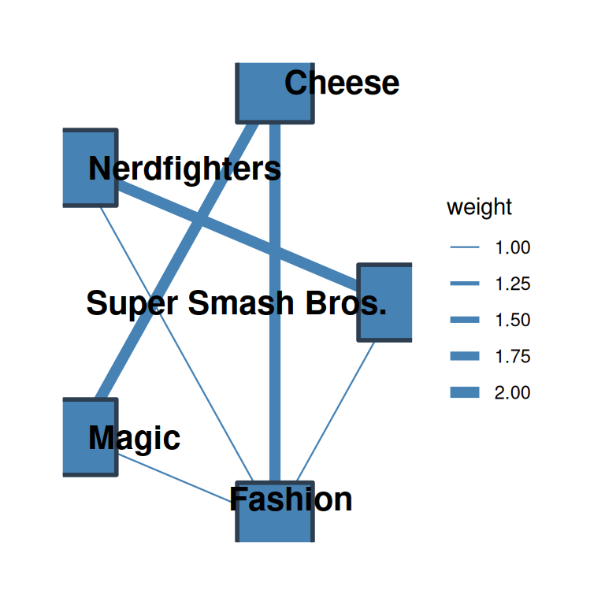

Two-Mode Networks, Bipartite Graphs, and the Duality of Persons and Groups
Types of affiliation networks that have been studied in the literature include:
How a sociological idea becomes a network measure:
1. Theory
Begin with theories specifying the membership relation between people and other entities: groups, teams, events.
2. Graph
Translate the membership concept into a graph-theoretic concept: the bipartite graph.
3. Matrix
Link the bipartite graph to matrix algebra to come up with network-analytic measures (e.g., centralities of individuals and events).

\[N(\text{Minjoo}) = \{\text{Cheese, Magic, Fashion}\}\] \[N(\text{Gabriela}) = \{\text{Super Smash Bros., Nerdfighters, Fashion}\}\]
\[N(\text{Cheese}) = \{\text{Parker, Brandon, Rahul, Minjoo}\}\] \[N(\text{Fashion}) = \{\text{Gabriela, Rahul, Minjoo}\}\]
People (\(U\))
| Person | \(k\) |
|---|---|
| Gabriela | 3 |
| Parker | 2 |
| Brandon | 1 |
| Marie | 2 |
| Rahul | 2 |
| Minjoo | 3 |
Groups (\(V\))
| Group | \(k\) |
|---|---|
| Super Smash Bros. | 2 |
| Cheese | 4 |
| Nerdfighters | 2 |
| Magic | 2 |
| Fashion | 3 |
Worked example — Gabriela’s row (add across the columns):
\[\mathbf{A}_{\text{Gabriela},\cdot} = \color{red}{1}_{SSB} + 0_{Cheese} + \color{red}{1}_{NF} + 0_{Magic} + \color{red}{1}_{Fashion}\]
| Super Smash Bros. | Cheese | Nerdfighters | Magic | Fashion | |
|---|---|---|---|---|---|
| Gabriela | 1 | 0 | 1 | 0 | 1 |
| Parker | 0 | 1 | 0 | 1 | 0 |
| Brandon | 0 | 1 | 0 | 0 | 0 |
| Marie | 1 | 0 | 1 | 0 | 0 |
| Rahul | 0 | 1 | 0 | 0 | 1 |
| Minjoo | 0 | 1 | 0 | 1 | 1 |
\[C_P^{DEG} = \sum_j a_{ij}\]
| Gabriela | Parker | Brandon | Marie | Rahul | Minjoo |
|---|---|---|---|---|---|
| 3 | 2 | 1 | 2 | 2 | 3 |
\[C_G^{DEG} = \sum_i a_{ij}\]
| Super Smash Bros. | Cheese | Nerdfighters | Magic | Fashion |
|---|---|---|---|---|
| 2 | 4 | 2 | 2 | 3 |
| Super Smash Bros. | Cheese | Nerdfighters | Magic | Fashion | |
|---|---|---|---|---|---|
| Gabriela | 1 | 0 | 1 | 0 | 1 |
| Parker | 0 | 1 | 0 | 1 | 0 |
| Brandon | 0 | 1 | 0 | 0 | 0 |
| Marie | 1 | 0 | 1 | 0 | 0 |
| Rahul | 0 | 1 | 0 | 0 | 1 |
| Minjoo | 0 | 1 | 0 | 1 | 1 |
| Gabriela | Parker | Brandon | Marie | Rahul | Minjoo | |
|---|---|---|---|---|---|---|
| Super Smash Bros. | 1 | 0 | 0 | 1 | 0 | 0 |
| Cheese | 0 | 1 | 1 | 0 | 1 | 1 |
| Nerdfighters | 1 | 0 | 0 | 1 | 0 | 0 |
| Magic | 0 | 1 | 0 | 0 | 0 | 1 |
| Fashion | 1 | 0 | 0 | 0 | 1 | 1 |
You can multiply any \(A_{m \times n}\) matrix by any \(B_{q \times p}\) matrix:
\(A_{4 \times 2} \times B_{2 \times 3}\)
\(A_{4 \times 3} \times B_{2 \times 3}\)
\[A_{R \times C} \times A^T_{C \times R} = C_{R \times R}\] \[A^T_{C \times R} \times A_{R \times C} = C_{C \times C}\]
\[O^P = A_{R \times C} \times A^T_{C \times R}\]
\[o^P_{ij} = \sum_k a_{ik} \, a_{jk}\]
Cell (Gabriela, Marie) — Gabriela’s row dotted with Marie’s row:
\[o^P_{GM} = (\color{red}{1})(\color{blue}{1}) + (0)(0) + (\color{red}{1})(\color{blue}{1}) + (0)(0) + (\color{red}{1})(\color{blue}{0}) = \mathbf{2}\]
Cell (Gabriela, Parker):
\[o^P_{GP} = (\color{red}{1})(\color{blue}{0}) + (0)(1) + (\color{red}{1})(\color{blue}{0}) + (0)(1) + (\color{red}{1})(\color{blue}{0}) = \mathbf{0}\]
Cell (Gabriela, Gabriela) — a row dotted with itself:
\[o^P_{GG} = (1)(1) + (0)(0) + (1)(1) + (0)(0) + (1)(1) = \mathbf{3}\]
| Gabriela | Parker | Brandon | Marie | Rahul | Minjoo | |
|---|---|---|---|---|---|---|
| Gabriela | 3 | 0 | 0 | 2 | 1 | 1 |
| Parker | 0 | 2 | 1 | 0 | 1 | 2 |
| Brandon | 0 | 1 | 1 | 0 | 1 | 1 |
| Marie | 2 | 0 | 0 | 2 | 0 | 0 |
| Rahul | 1 | 1 | 1 | 0 | 2 | 2 |
| Minjoo | 1 | 2 | 1 | 0 | 2 | 3 |
\[O^G = A^T_{C \times R} \times A_{R \times C}\]
| Super Smash Bros. | Cheese | Nerdfighters | Magic | Fashion | |
|---|---|---|---|---|---|
| Super Smash Bros. | 2 | 0 | 2 | 0 | 1 |
| Cheese | 0 | 4 | 0 | 2 | 2 |
| Nerdfighters | 2 | 0 | 2 | 0 | 1 |
| Magic | 0 | 2 | 0 | 2 | 1 |
| Fashion | 1 | 2 | 1 | 1 | 3 |
\[N(\text{Gabriela}) = \{\text{Super Smash Bros., Nerdfighters, Fashion}\}\] \[N(\text{Marie}) = \{\text{Super Smash Bros., Nerdfighters}\}\]
\[N(\text{Gabriela}) \cap N(\text{Marie}) = \{\text{Super Smash Bros., Nerdfighters}\}\]


People are connected to one another by virtue of the groups they belong to; groups are connected to one another by virtue of the people that belong to them. — Breiger (1974)
| P1 | P2 | P3 | P4 | P5 | P6 | |
|---|---|---|---|---|---|---|
| S1 | 1 | 1 | 0 | 0 | 1 | 0 |
| S2 | 0 | 0 | 1 | 1 | 0 | 0 |
| S3 | 0 | 1 | 0 | 0 | 0 | 0 |
| S4 | 1 | 0 | 1 | 0 | 0 | 1 |
| S5 | 0 | 1 | 1 | 0 | 0 | 0 |
| S6 | 0 | 1 | 1 | 1 | 1 | 1 |
| S7 | 0 | 0 | 0 | 1 | 0 | 1 |
| S1 | S2 | S3 | S4 | S5 | S6 | S7 | |
|---|---|---|---|---|---|---|---|
| S1 | 3 | 0 | 1 | 1 | 1 | 2 | 0 |
| S2 | 0 | 2 | 0 | 1 | 1 | 2 | 1 |
| S3 | 1 | 0 | 1 | 0 | 1 | 1 | 0 |
| S4 | 1 | 1 | 0 | 3 | 1 | 2 | 1 |
| S5 | 1 | 1 | 1 | 1 | 2 | 2 | 0 |
| S6 | 2 | 2 | 1 | 2 | 2 | 5 | 2 |
| S7 | 0 | 1 | 0 | 1 | 0 | 2 | 2 |
| M1 | M2 | M3 | M4 | M5 | |
|---|---|---|---|---|---|
| P1 | 1 | 0 | 0 | 0 | 0 |
| P2 | 1 | 1 | 0 | 0 | 0 |
| P3 | 0 | 0 | 0 | 1 | 1 |
| P4 | 0 | 0 | 1 | 0 | 0 |
| P5 | 1 | 0 | 1 | 0 | 0 |
| P6 | 0 | 0 | 1 | 0 | 0 |
| P7 | 0 | 1 | 0 | 0 | 0 |
| P8 | 0 | 1 | 1 | 0 | 0 |
| M1 | M2 | M3 | M4 | M5 | |
|---|---|---|---|---|---|
| M1 | 3 | 1 | 1 | 0 | 0 |
| M2 | 1 | 3 | 1 | 0 | 0 |
| M3 | 1 | 1 | 4 | 0 | 0 |
| M4 | 0 | 0 | 0 | 1 | 1 |
| M5 | 0 | 0 | 0 | 1 | 1 |